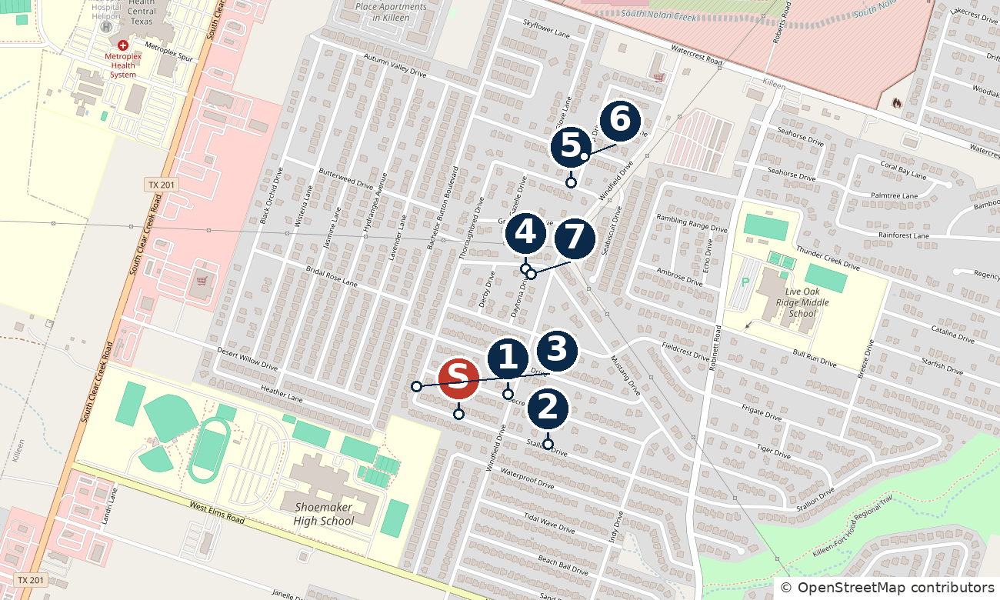

| |||||||||||||||||||||||||||||||||||||||||||||||||||||||||||||||||||||||||||||||||||||||||||||||||||||||||||||||||||||||||||||||||||||||||||||||||||||||||||||||||||||||||||||||||||||||||||||||||||||||||||||||||||||||||||||||||||||||||||||||||||||||||||||||||||||||||||||||||||||||||||||||||||||||||||||||||||||||||||||||||||||||||||||||||||||||||
| Here is a comparative market analysis for 4601 Stallion Dr, Killeen, TX 76549 (off market; 1,596 sq ft, 2 baths, built 1999, Windfield Estates Ph One), built to appraisal-style standards: line-by-line adjustments, net and gross flags and a reconciled value. Texas does not publish sale prices, so each comp shows its last list price (read on its Central Texas MLS listing page) and its Redfin-recorded close date. There are seven same-subdivision closings; five are older than 6 months and the subject is larger than all of them, so please read the caveats before relying on the range. This is an estimate, not an appraisal. | |||||||||||||||||||||||||||||||||||||||||||||||||||||||||||||||||||||||||||||||||||||||||||||||||||||||||||||||||||||||||||||||||||||||||||||||||||||||||||||||||||||||||||||||||||||||||||||||||||||||||||||||||||||||||||||||||||||||||||||||||||||||||||||||||||||||||||||||||||||||||||||||||||||||||||||||||||||||||||||||||||||||||||||||||||||||||
Comparative Market Analysis prepared by a loan officer using appraisal-style comp selection and adjustments. This is not an appraisal and was not prepared under USPAP by a licensed appraiser. | |||||||||||||||||||||||||||||||||||||||||||||||||||||||||||||||||||||||||||||||||||||||||||||||||||||||||||||||||||||||||||||||||||||||||||||||||||||||||||||||||||||||||||||||||||||||||||||||||||||||||||||||||||||||||||||||||||||||||||||||||||||||||||||||||||||||||||||||||||||||||||||||||||||||||||||||||||||||||||||||||||||||||||||||||||||||||
| |||||||||||||||||||||||||||||||||||||||||||||||||||||||||||||||||||||||||||||||||||||||||||||||||||||||||||||||||||||||||||||||||||||||||||||||||||||||||||||||||||||||||||||||||||||||||||||||||||||||||||||||||||||||||||||||||||||||||||||||||||||||||||||||||||||||||||||||||||||||||||||||||||||||||||||||||||||||||||||||||||||||||||||||||||||||||
Summary · 4601 Stallion Dr Indicated value (sales comparison approach) $203,000 Adjusted comp range $185,000 – $216,500 Bell CAD appraised value: $218,548 (+7.7% vs. indicated) Comps used 7 0.08–0.45 mi away Closed 11/21–9/11/26 price basis: last list prices Subject size 1,596 sf bd n/v / 2 ba · built 1999 Median adj. $/sf $128 range $116–$136 | |||||||||||||||||||||||||||||||||||||||||||||||||||||||||||||||||||||||||||||||||||||||||||||||||||||||||||||||||||||||||||||||||||||||||||||||||||||||||||||||||||||||||||||||||||||||||||||||||||||||||||||||||||||||||||||||||||||||||||||||||||||||||||||||||||||||||||||||||||||||||||||||||||||||||||||||||||||||||||||||||||||||||||||||||||||||||
Sale prices are not public in Texas. Texas is a non-disclosure state, so the closed sale price is not recorded. Unless a card says “Actual sold price,” the “price” is the last list price of a home that closed (the final asking price, before any seller concession). Actual sale prices may be lower; I did not apply a sale-to-list ratio because I do not have a verified one for Killeen. If actual prices closed under the last list price (common), the indicated value here is on the high side; treat it as a ceiling, not a floor. Realtors: if you know a comp's actual sold price, tap Update sold price on that comp (or just reply with the corrected sold prices) and I will revise this CMA. | |||||||||||||||||||||||||||||||||||||||||||||||||||||||||||||||||||||||||||||||||||||||||||||||||||||||||||||||||||||||||||||||||||||||||||||||||||||||||||||||||||||||||||||||||||||||||||||||||||||||||||||||||||||||||||||||||||||||||||||||||||||||||||||||||||||||||||||||||||||||||||||||||||||||||||||||||||||||||||||||||||||||||||||||||||||||||
| Where the comps are (S = subject, numbers = comps) | |||||||||||||||||||||||||||||||||||||||||||||||||||||||||||||||||||||||||||||||||||||||||||||||||||||||||||||||||||||||||||||||||||||||||||||||||||||||||||||||||||||||||||||||||||||||||||||||||||||||||||||||||||||||||||||||||||||||||||||||||||||||||||||||||||||||||||||||||||||||||||||||||||||||||||||||||||||||||||||||||||||||||||||||||||||||||
 S 4601 Stallion Dr (subject)1 4503 Secretariat2 4401 Stallion3 3105 Thoroughbred4 2801 Daytona5 2411 Thoroughbred6 2421 Gallop7 2806 Daytona Open in Google MapsGoogle lists the subject as A and comps 1–7 as B–H. Map © OpenStreetMap contributors. Pins are placed from address geocoding (OpenStreetMap Nominatim, US Census geocoder as fallback) and are approximate, usually within a house or two. | |||||||||||||||||||||||||||||||||||||||||||||||||||||||||||||||||||||||||||||||||||||||||||||||||||||||||||||||||||||||||||||||||||||||||||||||||||||||||||||||||||||||||||||||||||||||||||||||||||||||||||||||||||||||||||||||||||||||||||||||||||||||||||||||||||||||||||||||||||||||||||||||||||||||||||||||||||||||||||||||||||||||||||||||||||||||||
| Comparable sales Appraisal-style comps & adjustments · 4601 Stallion Dr, Killeen | |||||||||||||||||||||||||||||||||||||||||||||||||||||||||||||||||||||||||||||||||||||||||||||||||||||||||||||||||||||||||||||||||||||||||||||||||||||||||||||||||||||||||||||||||||||||||||||||||||||||||||||||||||||||||||||||||||||||||||||||||||||||||||||||||||||||||||||||||||||||||||||||||||||||||||||||||||||||||||||||||||||||||||||||||||||||||
| How the comps were chosen. I do not have direct MLS access. I pulled every closed single-family sale within about 1 mile of the subject for the last 12 months from Redfin (Central Texas MLS data), then read each candidate's Central Texas MLS listing page (via Texas Ally Real Estate Group) for its last list price, size and bedrooms. Order of preference (per my CMA standards): same subdivision, then within 0.5 mi, then within 1 mi; closed within 6 months (extended to 12 with a reason); size within about ±15% of 1,596 sq ft; built within about 10 years of 1999; at least 3 comps. Result: only 3 same-subdivision sales fit inside 6 months (4503 Secretariat, 4401 Stallion, and the excluded 2810 Derby), so I extended to 12 months and kept the seven Windfield Estates Ph One sales below. They are 0.08-0.45 mi from the subject, 1,454-1,576 sq ft, built 1997-2003. Closed dates run from 11/21/2025 to 9/11/2026; five of seven are older than 6 months. Bracketing: the subject is larger than all seven comps (by 1.3% to 9.8%), so the comps do not bracket it on size; that is the main weakness of this set. Active and pending listings were not used as comps. | |||||||||||||||||||||||||||||||||||||||||||||||||||||||||||||||||||||||||||||||||||||||||||||||||||||||||||||||||||||||||||||||||||||||||||||||||||||||||||||||||||||||||||||||||||||||||||||||||||||||||||||||||||||||||||||||||||||||||||||||||||||||||||||||||||||||||||||||||||||||||||||||||||||||||||||||||||||||||||||||||||||||||||||||||||||||||
| |||||||||||||||||||||||||||||||||||||||||||||||||||||||||||||||||||||||||||||||||||||||||||||||||||||||||||||||||||||||||||||||||||||||||||||||||||||||||||||||||||||||||||||||||||||||||||||||||||||||||||||||||||||||||||||||||||||||||||||||||||||||||||||||||||||||||||||||||||||||||||||||||||||||||||||||||||||||||||||||||||||||||||||||||||||||||
| Each comp is adjusted toward the subject: (subject − comp) × rate. With no market-supported rates, every adjustment is $0 and the grid simply shows the differences. “n/v” / “not verified” means the feature could not be confirmed, so nothing was assumed. Price = last list price of a home that closed (Texas does not publish sale prices). The indicated value is rounded to $1,000. | |||||||||||||||||||||||||||||||||||||||||||||||||||||||||||||||||||||||||||||||||||||||||||||||||||||||||||||||||||||||||||||||||||||||||||||||||||||||||||||||||||||||||||||||||||||||||||||||||||||||||||||||||||||||||||||||||||||||||||||||||||||||||||||||||||||||||||||||||||||||||||||||||||||||||||||||||||||||||||||||||||||||||||||||||||||||||
| Adjustment rates and their basis | |||||||||||||||||||||||||||||||||||||||||||||||||||||||||||||||||||||||||||||||||||||||||||||||||||||||||||||||||||||||||||||||||||||||||||||||||||||||||||||||||||||||||||||||||||||||||||||||||||||||||||||||||||||||||||||||||||||||||||||||||||||||||||||||||||||||||||||||||||||||||||||||||||||||||||||||||||||||||||||||||||||||||||||||||||||||||
| |||||||||||||||||||||||||||||||||||||||||||||||||||||||||||||||||||||||||||||||||||||||||||||||||||||||||||||||||||||||||||||||||||||||||||||||||||||||||||||||||||||||||||||||||||||||||||||||||||||||||||||||||||||||||||||||||||||||||||||||||||||||||||||||||||||||||||||||||||||||||||||||||||||||||||||||||||||||||||||||||||||||||||||||||||||||||
| Reconciliation | |||||||||||||||||||||||||||||||||||||||||||||||||||||||||||||||||||||||||||||||||||||||||||||||||||||||||||||||||||||||||||||||||||||||||||||||||||||||||||||||||||||||||||||||||||||||||||||||||||||||||||||||||||||||||||||||||||||||||||||||||||||||||||||||||||||||||||||||||||||||||||||||||||||||||||||||||||||||||||||||||||||||||||||||||||||||||
Indicated value (sales comparison approach) $203,000 Adjusted range of the 7 comps: $185,000 – $216,500 · median $204,000 · simple average $202,914 Weighted: Comp 1: $199,999 × 14% Comp 2: $204,000 × 14% Comp 3: $210,000 × 14% Comp 4: $216,500 × 14% Comp 5: $205,000 × 14% Comp 6: $185,000 × 14% Comp 7: $199,900 × 14% = $202,914, rounded to the nearest $1,000. Bell CAD appraised value: $218,548 (+7.7% vs. indicated value) | |||||||||||||||||||||||||||||||||||||||||||||||||||||||||||||||||||||||||||||||||||||||||||||||||||||||||||||||||||||||||||||||||||||||||||||||||||||||||||||||||||||||||||||||||||||||||||||||||||||||||||||||||||||||||||||||||||||||||||||||||||||||||||||||||||||||||||||||||||||||||||||||||||||||||||||||||||||||||||||||||||||||||||||||||||||||||
| Method. Every comp is a same-subdivision sale and none has a supported adjustment, so the indicated value is the simple average of the seven last list prices: $203,000 (median $204,000; range $185,000 to $216,500; middle half $200,000 to $208,000). Dropping any one comp moves it to between $201,000 and $206,000. Size sensitivity. The subject is on average 74 sq ft larger than the comps; adding $25 per sq ft would give $204,000 and $50 per sq ft $205,000 (not applied). The comps average $134 per sq ft, which applied to 1,596 sq ft gives $213,000; that likely overstates it because price per sq ft usually falls as size rises. Outlier. Adding 2810 Derby Dr ($154,000) back would pull the indicated value down to about $197,000. Result. Suggested value about $203,000 (about $127 per sq ft), with a middle-half range of $200,000 to $208,000 (full comp spread $185,000 to $216,500). Reasons for caution: prices are last list prices, not closed prices, so actual sales were probably at or below them; five of seven comps are 6-11.5 months old with no time adjustment; the subject is bigger than every comp; and its bedroom count, lot, condition and updates are unknown. This is an estimate for review; a licensed appraiser or your MLS (with real closed prices and interiors) should confirm. | |||||||||||||||||||||||||||||||||||||||||||||||||||||||||||||||||||||||||||||||||||||||||||||||||||||||||||||||||||||||||||||||||||||||||||||||||||||||||||||||||||||||||||||||||||||||||||||||||||||||||||||||||||||||||||||||||||||||||||||||||||||||||||||||||||||||||||||||||||||||||||||||||||||||||||||||||||||||||||||||||||||||||||||||||||||||||
| Considered and not used | |||||||||||||||||||||||||||||||||||||||||||||||||||||||||||||||||||||||||||||||||||||||||||||||||||||||||||||||||||||||||||||||||||||||||||||||||||||||||||||||||||||||||||||||||||||||||||||||||||||||||||||||||||||||||||||||||||||||||||||||||||||||||||||||||||||||||||||||||||||||||||||||||||||||||||||||||||||||||||||||||||||||||||||||||||||||||
2810 Derby Dr · closed 10/9/2026 Same subdivision, 1,560 sq ft, 1998, but its last list price was only $154,000 (Texas Ally page, MLS #620457), $31,000 (17%) below the next-lowest comp and about $99 per sq ft vs $119-$144 for the others. The listing page I could read gives no condition information, so I could not tell why (it may be a condition or investor sale, but that is a guess). Treated as an outlier and left out; <b>the sensitivity below shows the effect of adding it back</b>. | |||||||||||||||||||||||||||||||||||||||||||||||||||||||||||||||||||||||||||||||||||||||||||||||||||||||||||||||||||||||||||||||||||||||||||||||||||||||||||||||||||||||||||||||||||||||||||||||||||||||||||||||||||||||||||||||||||||||||||||||||||||||||||||||||||||||||||||||||||||||||||||||||||||||||||||||||||||||||||||||||||||||||||||||||||||||||
4406 Stallion Dr · closed 12/16/2025 Same street, but the sources disagree on size: Redfin shows 1,580 sq ft while the MLS listing page shows 1,980 sq ft (last list price $229,000). A 25% size conflict I cannot resolve, plus it is 11.6 months old. Not used. | |||||||||||||||||||||||||||||||||||||||||||||||||||||||||||||||||||||||||||||||||||||||||||||||||||||||||||||||||||||||||||||||||||||||||||||||||||||||||||||||||||||||||||||||||||||||||||||||||||||||||||||||||||||||||||||||||||||||||||||||||||||||||||||||||||||||||||||||||||||||||||||||||||||||||||||||||||||||||||||||||||||||||||||||||||||||||
4311 Stallion Dr (Windfield Ph Five, 2002) · closed 3/11/2026 Close (0.17 mi), 1,617 sq ft, built 2002, last list price $219,000 (MLS #602221). Different phase (Ph Five) and 3 years newer, so it sits behind the same-subdivision sales; its price is above the set average and supports the upper part of the range. | |||||||||||||||||||||||||||||||||||||||||||||||||||||||||||||||||||||||||||||||||||||||||||||||||||||||||||||||||||||||||||||||||||||||||||||||||||||||||||||||||||||||||||||||||||||||||||||||||||||||||||||||||||||||||||||||||||||||||||||||||||||||||||||||||||||||||||||||||||||||||||||||||||||||||||||||||||||||||||||||||||||||||||||||||||||||||
4311 Waterproof Dr (Conder Valley Ph One) · closed 3/27/2026 0.16 mi, 1,493 sq ft, 1999, last list price $212,000 (MLS #596595). Different subdivision; corroborates the range. Not used. | |||||||||||||||||||||||||||||||||||||||||||||||||||||||||||||||||||||||||||||||||||||||||||||||||||||||||||||||||||||||||||||||||||||||||||||||||||||||||||||||||||||||||||||||||||||||||||||||||||||||||||||||||||||||||||||||||||||||||||||||||||||||||||||||||||||||||||||||||||||||||||||||||||||||||||||||||||||||||||||||||||||||||||||||||||||||||
Conder Valley and Sunflower Estates sales (about 15 closings, 0.2-0.6 mi) · Dec 2025 - Oct 2026 e.g. 4309 Tidal Wave, 4400 Beach Ball, 4305 Beach Ball, 4210 Sand Dollar, 3100 Jasmine Ln, 2907 Hydrangea Ave. Different subdivisions and, for Sunflower Estates, built 2005 and often 1,700+ sq ft. Same-subdivision sales were enough, so these were not pulled apart one by one; their prices were not verified on listing pages. Not used. | |||||||||||||||||||||||||||||||||||||||||||||||||||||||||||||||||||||||||||||||||||||||||||||||||||||||||||||||||||||||||||||||||||||||||||||||||||||||||||||||||||||||||||||||||||||||||||||||||||||||||||||||||||||||||||||||||||||||||||||||||||||||||||||||||||||||||||||||||||||||||||||||||||||||||||||||||||||||||||||||||||||||||||||||||||||||||
4308 Stallion Dr (Windfield Ph Five) · closed 6/8/2026 2,148 sq ft, 5 bd / 3 ba: 35% larger than the subject. Too large. | |||||||||||||||||||||||||||||||||||||||||||||||||||||||||||||||||||||||||||||||||||||||||||||||||||||||||||||||||||||||||||||||||||||||||||||||||||||||||||||||||||||||||||||||||||||||||||||||||||||||||||||||||||||||||||||||||||||||||||||||||||||||||||||||||||||||||||||||||||||||||||||||||||||||||||||||||||||||||||||||||||||||||||||||||||||||||
Active and pending listings · current Context only, see the market context below. | |||||||||||||||||||||||||||||||||||||||||||||||||||||||||||||||||||||||||||||||||||||||||||||||||||||||||||||||||||||||||||||||||||||||||||||||||||||||||||||||||||||||||||||||||||||||||||||||||||||||||||||||||||||||||||||||||||||||||||||||||||||||||||||||||||||||||||||||||||||||||||||||||||||||||||||||||||||||||||||||||||||||||||||||||||||||||
| Market context (not used as comps). Active listings within about 0.5 mi (Redfin, pulled 11/4/2026, list prices): 4604 Fieldcrest Dr $205,000 (1,438 sq ft, 19 days on market); 2415 Gallop Dr $210,000 (1,555 sq ft, 120 days); 2503 Thoroughbred Dr $204,900 (1,450 sq ft, 170 days); 4500 Fieldcrest Dr $184,900 (1,429 sq ft, 95 days); 2610 Thoroughbred Dr $230,000 (5 bd, 1,597 sq ft, 17 days); 4402 Mustang Dr $215,000 (1,641 sq ft, built 2004, 13 days). Asking prices of $185,000-$230,000 and several long days-on-market support a value near the middle of the comp range rather than the top. For reference, the appraisal-district value reported for the subject is $218,548 and the Zillow Zestimate $201,100; both are automated figures and neither was used in the calculation. | |||||||||||||||||||||||||||||||||||||||||||||||||||||||||||||||||||||||||||||||||||||||||||||||||||||||||||||||||||||||||||||||||||||||||||||||||||||||||||||||||||||||||||||||||||||||||||||||||||||||||||||||||||||||||||||||||||||||||||||||||||||||||||||||||||||||||||||||||||||||||||||||||||||||||||||||||||||||||||||||||||||||||||||||||||||||||
| Comparative Market Analysis prepared by a loan officer using appraisal-style comp selection and adjustments. This is not an appraisal and was not prepared under USPAP by a licensed appraiser. Prices shown are last list prices of closed sales as published on the linked listing pages (not independently verified against the MLS; actual closed prices are not public in Texas). Subject details came from separate public-record lookups and were not independently verified by me. A licensed appraiser or your own MLS data should confirm value. Not a commitment to lend. | |||||||||||||||||||||||||||||||||||||||||||||||||||||||||||||||||||||||||||||||||||||||||||||||||||||||||||||||||||||||||||||||||||||||||||||||||||||||||||||||||||||||||||||||||||||||||||||||||||||||||||||||||||||||||||||||||||||||||||||||||||||||||||||||||||||||||||||||||||||||||||||||||||||||||||||||||||||||||||||||||||||||||||||||||||||||||
| |||||||||||||||||||||||||||||||||||||||||||||||||||||||||||||||||||||||||||||||||||||||||||||||||||||||||||||||||||||||||||||||||||||||||||||||||||||||||||||||||||||||||||||||||||||||||||||||||||||||||||||||||||||||||||||||||||||||||||||||||||||||||||||||||||||||||||||||||||||||||||||||||||||||||||||||||||||||||||||||||||||||||||||||||||||||||